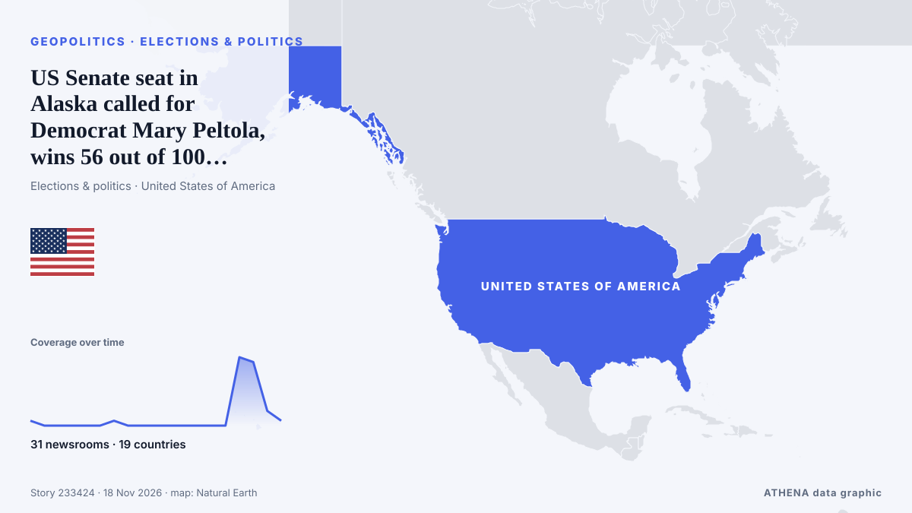

ATHENA Glaux Intelligence — Veille mondiale de l'information — chaque chiffre expliqué
Chaque titre, vérifié dans plusieurs pays.
ATHENA Glaux suit 635 médias dans le monde. Une information devient un événement vérifié seulement lorsque des médias indépendants la rapportent. Chaque événement indique qui l'a publiée en premier et un score de risque avec ses raisons.
Des articles arrivent de médias indépendants : quand deux se rejoignent sur la même histoire, un événement vérifié naît.
Comment ATHENA vérifie une information
- CollecterLes reportages arrivent de médias indépendants dans de nombreux pays.
- CroiserQuand deux médias se rejoignent sur la même information, elle devient un événement vérifié.
- ExpliquerChaque événement montre qui était le premier, jusqu'où il s'est propagé et pourquoi le risque est ce qu'il est.

GéopolitiqueUS Senate seat in Alaska called for Democrat Mary Peltola, wins 56 out of 100 seat majority
The Democratic Party won majorities in the Senate and the House of Representatives. de Mothership
Les titres sont affichés en anglais, tels que publiés.
Tashima submits bid for FIFA presidency
TOKYO: Japan Football Association (JFA) Honorary President Kozo Tashima said on Wednesday he has submitted his bid for the FIFA presidency after securing the support of five nat... de Oman Observer
Pound Sterling Price News and Forecast: GBP/USD hits five-week low as UK CPI miss meets Fed hike expectations
UK inflation came in a tenth under forecast on Wednesday, and Federal Reserve (Fed) Governor Christopher Waller called for a half-point hike, so expected rates have moved against the Pound from both… de FXStreet

Navires dans les détroits du monde en ce moment
Comptages AIS en direct. Touchez ou survolez une barre pour le détail.
COP31 Cover Draft Raises Climate Finance Questions as Liberia Seeks Support for Implementation
Summary By Aria Deemie A draft political agreement at the 31st United Nations Climate Change Conference proposes that developed countries keep their promise to increase annual adaptation finance… de FrontPage Africa
Trump warns Iran over report of ‘dirty bomb’ plot
President Trump warned the Iranian regime after a report that Iran was planning a ‘dirty bomb’ attack in Washington. de NBC News (World)
Israel elects new parliament speaker in blow to Netanyahu
Israel’s parliament voted on Tuesday to select a new speaker opposed to the agenda of Benjamin Netanyahu, a potential first step in rolling back the prime minister’s divisive political agenda even as… de Cyprus Mail
Géopolitique, politique et sécurité
Plus ›Israeli military begins a new thrust in Gaza, kills three people
The Israeli military said its forces were targeting "Hamas infrastructure". de The Straits Times
- Diplomatie et sommets
Trump 'serious' about engaging with N. Korean leader Kim: Rubio
- Défense et sécurité nationale
Germany, UK push back after US criticizes Ukraine's deep strikes into Russia
- Diplomatie et sommets
Xi and Putin meet at APEC summit ahead of trilateral talks with Trump
- Guerres et conflits
Ukraine’s attack on Kerch Bridge is a major blow to Putin and Russia’s control of Crimea
Économie, finance et marchés
Plus ›Bombay High Court quashes ICICI Bank’s nod to prosecute ex-CEO Chanda Kochhar in ‘loan fraud’ case
Mumbai: The Bombay High Court on Wednesday quashed ICICI Bank’s sanction to prosecute its former CEO Chanda Kochhar in a case involving alleged irregularities in loans provided to the Venugopal… de Deccan Herald
- Banques et crédit
Deutsche Bank leak points to Russian laundering in Hungary
- Actions, obligations et marchés
Anthropic likely to price IPO above the current range of $70 to $78, sources tell CNBC
- Banques et crédit
European Commission proposes up to $49B in new loan package for Ukraine in 2027
- Banques et crédit
West Bank’s displaced Palestinians hold little hope for post-Netanyahu era
Commerce, industrie et infrastructures
Plus ›Carney says Canada’s growing trade ties with China are not a top concern for Trump
SHENZHEN, China (AP) — Canadian Prime Minister Mark Carney on Wednesday said that Canada ’s growing trade relations with China are not a top priority for U.S. de The Canadian Press (via CityNews)
- Construction et infrastructures
Ukraine Says It Took Down Crimean Bridge Arch Without Musk’s Starlink
- Droits de douane et contrôles
Thailand to seek US tariff cut after reaching key terms of trade deal, says minister
- Infrastructures critiques
Leavitt: White House needs to 'calm the temperature' after nationwide tech outages
- Infrastructures critiques
'The goal was to halt aid to Ukraine' — Russia planned high casualty false-flag attack near Kaliningrad border, Rzeczpospolita reports
Énergie, ressources et environnement
Plus ›Woodside seals LNG supply deal with Trafigura
Australian LNG player Woodside has signed an LNG sales and supply agreement with commodity trader Trafigura. de LNG Prime
- Pétrole et gaz
EnQuest Sells NEO NEXT+ in UK North Sea Retreat
- Climat et politique climatique
Liberia Calls for Stronger Climate Support in Meeting with UN Secretary-General at COP31
- Climat et politique climatique
Albanese appears in photo with Putin but has warning for Russia
- Nucléaire
IAEA says North Korea is expanding uranium-enrichment plant at Yongbyon
Technologie, IA et cybersécurité
Plus ›Voyager 1 spacecraft reaches one light-day milestone
The spacecraft is now about 26 billion kilometres (16 billion miles) away, according to NASA. de Express Tribune
- Puces et calcul
The enraging hypocrisy at the heart of the Nvidia scandal
- Intelligence artificielle
Anthropic IPO draws strong demand as AI company prepares for $64bn share sale
- Espace et satellites
It’s launch day for ‘Grand Theft Auto VI’. The 13-year wait is over at midnight
- Médias et désinformation
Police raid Turkiye’s pro-opposition broadcaster Sozcu TV
Entreprises et investissement
Plus ›Sony defeats £2 billion UK claim over PlayStation Store pricing
Sony fought off a London lawsuit worth almost £2 billion that alleged the PlayStation maker’s “monopoly position” inflated prices for digital games, after a tribunal dismissed the claim in its… de Cyprus Mail
- Investissements
UNICEF fast facts: World leaders meet in Manila to end violence against children
- Stratégie d'entreprise
ZIM net profit surges to $830 million in Q3 as freight rates climb
- Start-up et innovation
Experts hail China's APEC hosting as boost to innovation, cooperation
- Capital-risque et financement
Payhawk Raises $280 Million to Expand Expense Management Platform Into Finance Operating System
Accidents et urgences
Plus ›Petrol bomb kills activist in Bangladesh ex-PM Hasina’s hometown
With tensions running high, violent attacks have hit Sheikh Hasina's hometown and political stronghold of Gopalganj. de Free Malaysia Today
- Accidents et urgences
Five injured in Jordanian Black Hawk helicopter crash during training exercise
- Accidents et urgences
Prague train crash leaves 46 people injured
- Accidents et urgences
Tenant in collapsed Brooklyn building warned landlord of cracks, lawsuit says
- Accidents et urgences
Serbian military pilot reportedly killed as MiG-29 fighter jet crashes near Belgrade
Trois façons de lire aujourd'hui
Commencez par celle qui convient à votre tempsÉvénements vérifiés
Classés selon l'ampleur de la couverture
- Jensen Huang Exit: 3 Companies That Could Gain The Most If Nvidia Stumbles140 médias · 46 paysRisque 4.7
- One missing, 11 injured in attack on ADNOC tanker in Hormuz98 médias · 39 paysRisque 4.2
- Bezos says 'heavily involved' in casting Robert Pattinson as Bond94 médias · 38 paysRisque 2.9
- Xi, Putin Meet Ahead of Historic Trump Trilateral Summit48 médias · 32 paysRisque 5.5
- Asian chip stocks rebound after Nvidia earnings beat expectations40 médias · 20 paysRisque 3.7
Bureau d'analyse
Posez une question et lisez une évaluation argumentée d'un sujet majeur, avec ce qui la démentirait.
Ouvrir le Bureau d'analyse ›Aujourd'hui en chiffres
| 19:00 | 380 |
|---|---|
| 20:00 | 540 |
| 21:00 | 556 |
| 22:00 | 621 |
| 23:00 | 516 |
| 00:00 | 449 |
| 01:00 | 329 |
| 02:00 | 349 |
| 03:00 | 393 |
| 04:00 | 450 |
| 05:00 | 281 |
| 06:00 | 433 |
| 07:00 | 597 |
| 08:00 | 636 |
| 09:00 | 653 |
| 10:00 | 587 |
| 11:00 | 705 |
| 12:00 | 459 |
| 13:00 | 366 |
| 14:00 | 732 |
| 15:00 | 706 |
| 16:00 | 646 |
| 17:00 | 547 |
| 18:00 | 893 |
Risque des événements du jour
Signaux émergents
- Risque en hausse · ActifUS Navy Chief Blasted Over "Minimising" Mental Health Strain Of Iran War
- Hausse soudaine · ActifLateef Bhat
- Hausse soudaine · ActifSiberia
- Hausse soudaine · ActifJava
- Hausse soudaine · ActifTrump and Xi
Restez informé
ATHENA Weekly Risk Picture
Les plus grands risques géopolitiques, économiques et maritimes de la semaine, recoupés et notés.
Chaque vendredi à 8 h (heure d'Athènes) · gratuit · en anglais
S'abonner gratuitementATHENA sur Telegram
Les nouvelles dès leur publication : les événements urgents de risque 6 ou plus, un récapitulatif horaire, les mises à jour des suivis de risque et le briefing quotidien à 10 h.
Gratuit · publications en anglais · désinscription à tout moment
Rejoindre le canalL'inscription est gérée par beehiiv avec double confirmation : rien de ce que vous saisissez n'est envoyé à ATHENA, et chaque numéro contient un lien de désinscription.
Suivi des risques
Plus ›Risques mondiaux — semaine 47, 2026 (16–22 nov.) ›